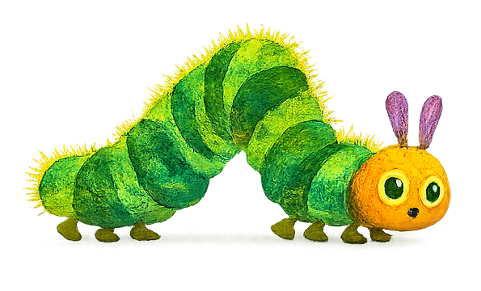

Food Alara Eats is a visual diary built from photographs of meals across different places and moments. Inspired by the structure of The Very Hungry Caterpillar, the project turns a camera roll into a scrolling story about memory, repetition, appetite, and everyday documentation. Each image becomes both a record of what was eaten and a fragment of a larger personal archive.
On smaller screens, the story behind the photos is revealed, transforming the gallery into a narrative about what Alara ate.
